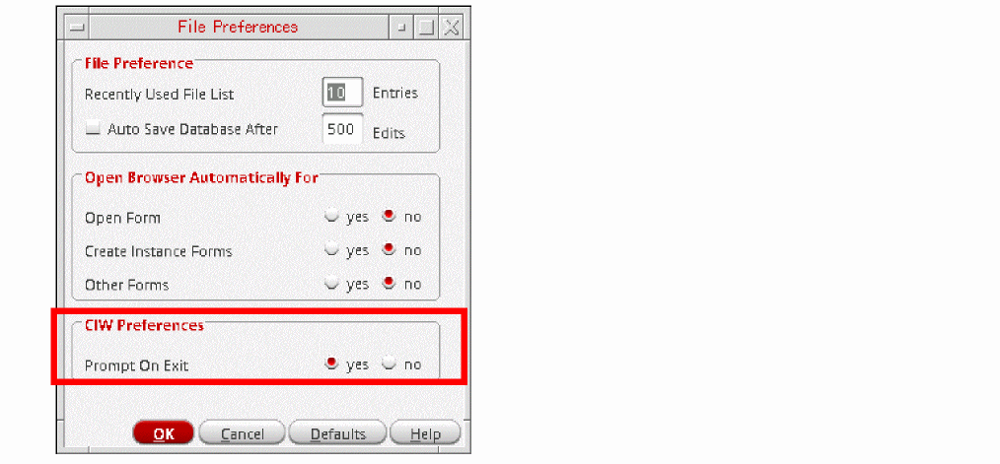
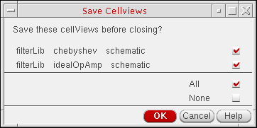
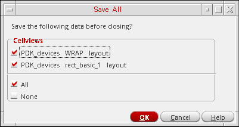

Exiting Virtuoso
You can exit Virtuoso by typing a command or selecting a menu item. The Design Environment prompt is available in both graphics and non-graphics modes. In graphics mode, a command prompt is available on the input line of the CIW.
Before you quit Virtuoso, you should save any design or data changes you made during this session. For more information, see Saving Changes in Virtuoso Studio Design Environment.
To exit Virtuoso from the Design Environment prompt:
-
From the CIW, choose File – Exit.
An Exit prompt appears.
If you do not want an Exit prompt to appear every time you exit the Design Environment, you can select no for the Prompt On Exit option in the CIW Preferences group box on the File Preferences form.You can also specify this preference by saving the following line in your.cdsenvfile:ddserv.ciw promptOnExit boolean nil
-
Click Yes.
If you have made no changes since the last save, the software exits.
If you have unsaved data in any open session window, the Save Cellviews form appears.

- Deselect the check boxes corresponding to the cellviews for which the changes do not need to be saved or click None to deselect all cellviews and save none of your changes. This is optional.
-
Click OK.
The specified changes are saved and the application exits.
If you click Cancel, you cancel both save and exit operations. The program does not save your changes and does not exit.If you attempt to exit Virtuoso when there are more than 1632 modified cellviews, constraints, and techfiles, which are active in your session then you get prompted by the Save All form to choose All or None, without the list of modified data being displayed as it exceeds displayable limits.
Related Topics
Return to top